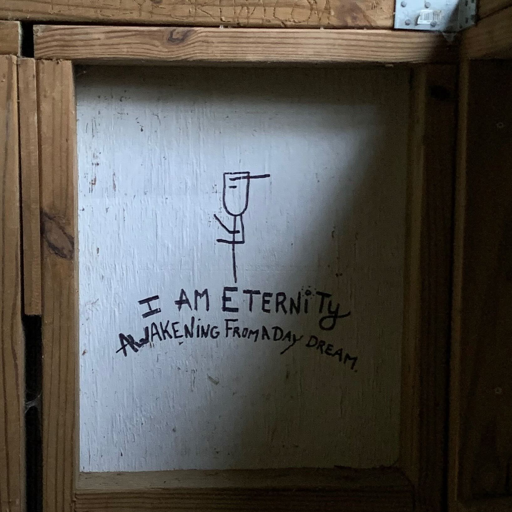

here is some graffiti from a privy on the a.t. in north carolina that i really love
***
here is an article my friend showed me. pretty neato.
***
on power:
We live in capitalism. Its power seems inescapable. So did the divine right of kings. Any human power can be resisted and changed by human beings. Resistance and change often begin in art, and very often in our art—the art of words.
on her fellow authors of fantasy and science fiction:
I think hard times are coming when we will be wanting the voices of writers who can see alternatives to how we live now and can see through our fear-stricken society and its obsessive technologies. We will need writers who can remember freedom. Poets, visionaries—the realists of a larger reality.